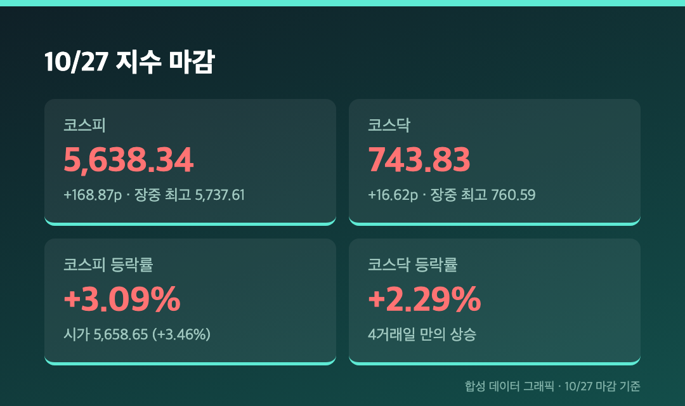
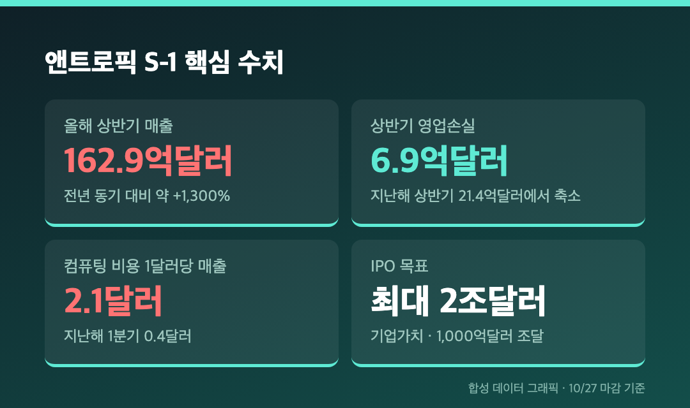
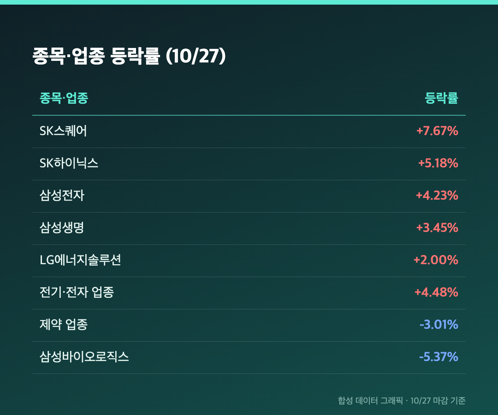
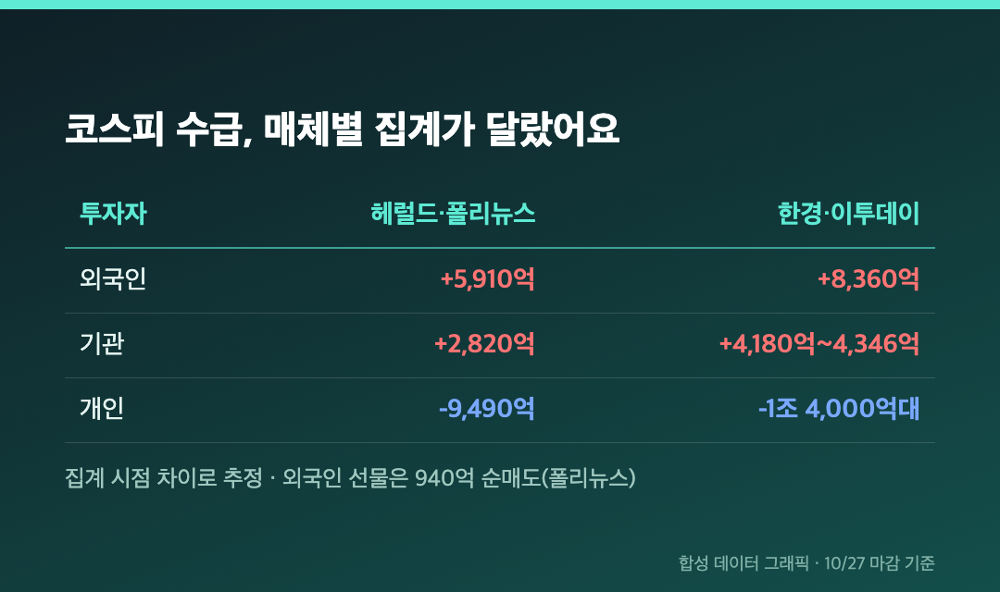
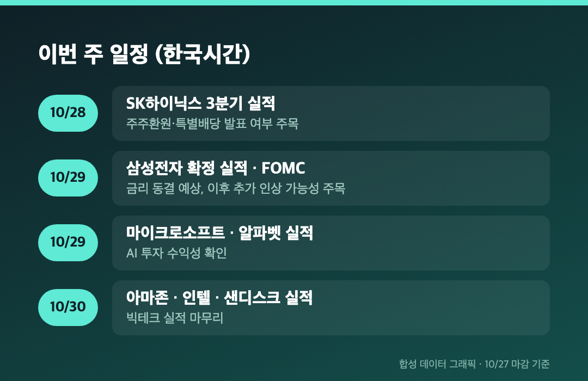

어제 7개월 만의 최저 종가를 찍었던 코스피가 오늘은 왜 3% 넘게 뛰었을까요? 이유는 태평양 건너 앤트로픽에 있었습니다.
오늘(10/27, 화)은 정상 개장일이었고, 아래 수치는 전부 오늘 마감 기준이에요. 전 거래일인 어제 종가가 5,469.47이었으니까 거기서 출발한 반등입니다.
🙌 코스피 +3.09% 5,638.34, 장중 5,737까지 갔다가 일부 반납
코스피 5,638.34 (+168.87포인트, +3.09%) / 코스닥 743.83 (+16.62포인트, +2.29%) |

코스피는 5,658.65(+3.46%)로 갭 상승 출발했고, 장중 고가는 5,737.61(+4.90%)이었어요. 그런데 오후 들어 개인 매도가 나오면서 상승폭이 줄었습니다(한국경제). 코스닥도 장중 760.59(+4.59%)를 찍었다가 743.83에 마감했고, 4거래일 만의 상승 마감이에요. 코스피는 상승 597종목, 하락 277종목이었습니다(매일일보).
오전 10시 13분엔 매수 사이드카까지 발동됐어요. 코스피200선물이 기준가 대비 5% 이상 오른 상태가 1분간 이어지면 프로그램 매수호가 효력이 5분간 멈추는 제도인데, 10/21 이후 4거래일 만입니다. 헤럴드경제는 코스피가 19일부터 하루 오르면 하루 내리는 식으로 오르내리고 있다고 짚었어요. 어제 -1.46%, 오늘 +3.09%. 네, 지켜보는 쪽 심장이 제일 바쁩니다.
🧠 왜 올랐나 – 앤트로픽 S-1 공개, AI 투자 회수 우려가 한풀 꺾였어요

간밤 미국에서 클로드 개발사 앤트로픽이 SEC에 IPO용 증권신고서(S-1)를 냈어요. 목표는 최대 2조 달러 기업가치에 1,000억 달러 조달이고, 성사되면 미국 증시 역대 최대 IPO입니다. 시장이 더 반응한 건 숫자였어요. 매일일보 기준으로 올해 상반기 매출은 162억 9,000만 달러(전년 동기 대비 약 1,300% 증가), 영업손실은 21억 4,000만 달러에서 약 6억 9,000만 달러로 줄었습니다. 폴리뉴스는 컴퓨팅 비용 1달러당 매출이 지난해 1분기 0.4달러에서 올해 2분기 2.1달러가 됐다고 전했어요.
유안타증권 이재원 연구원은 "막대한 연산 자원 투자에도 매출 창출 속도가 비용 증가를 앞지르고 있다는 점에서 의미가 있다"고 평가했어요. 그동안 시장을 누른 게 "AI에 이렇게 돈을 쏟아붓는데 회수가 되나"라는 의심이었으니, 그 의심에 숫자로 답이 나온 셈이죠. 필라델피아반도체지수가 +2.82%, 마이크론 +2.98%, 엔비디아 +2.39%였고 SK하이닉스 ADR도 4% 넘게 올랐다고 해요. 여기에 중동 긴장 완화 기대로 국제유가가 일부 내린 것도 보탬이 됐다고 합니다(헤럴드경제).
물론 다 해소된 건 아니에요. 매일일보는 메타가 최대 950억 달러 규모의 주식 발행 등 자금조달 계획을 공개했고, 반도체 기업이 고객사에 자본을 대주고 그 고객이 다시 반도체를 사는 순환 구조도 부각돼서 수익성·재무건전성은 계속 봐야 한다고 짚었어요.
📊 삼성전자 +4.23%, SK하이닉스 +5.18% – 전기·전자 업종 +4.48%

삼성전자와 SK하이닉스가 지수를 끌었어요. SK하이닉스는 15일 -11.06% 급락으로 120만원대까지 내려갔다가, 오늘 9거래일 만에 종가 기준 130만원대를 되찾았습니다. SK스퀘어는 +7.67%로 급등했는데, 한국경제는 SK하이닉스의 대규모 특별배당 기대감 때문이라고 설명했어요. 반대편엔 삼성바이오로직스 -5.37%, 셀트리온 -0.74%, 업종으론 제약 -3.01%가 있었습니다.
(삼성전자·SK하이닉스 등락률은 이투데이가 +4.46%, +5.49%로 쓴 곳도 있는데, 집계 시점 차이로 보여요. 다수 매체가 공통으로 쓴 4.23%, 5.18% 기준으로 적었습니다. 삼성바이오로직스, 삼성전기도 매체별로 소수점 차이가 있어요.)
저는 삼성전자 25주를 들고 있는데요, 어제 -1.16%였던 걸 오늘 +4.23%가 덮어주긴 했습니다. 다만 하루짜리 반등이라 계좌 색깔이 달라졌다고 말하긴 어려워요.
SK텔레콤도 재밌었어요. 2023년 앤트로픽에 1억 달러를 초기 투자한 이력 덕에 장중 8%대까지 급등했는데, 마감은 +1.94%였습니다. JYP엔터도 일본계 회사 인수설로 장중 15%대까지 올랐다가 회사가 부인하면서 +6.81%로 내려왔고요.
💸 외국인 순매수 전환, 근데 금액은 5,910억원? 8,360억원?

외국인이 이틀간 이어온 순매도를 끊고 샀다는 건 모든 매체가 같아요. 문제는 금액입니다. 헤럴드경제·폴리뉴스는 외국인 5,910억원, 기관 2,820억원 순매수, 개인 9,490억원 순매도로 적었고요. 한국경제·이투데이는 외국인 8,360억원, 기관 4,180억~4,346억원 순매수, 개인 1조 4,000억원대 순매도로 적었어요. 집계 시점이 다른 것 같은데, 확정은 못 하겠습니다.
선물도 엇갈렸어요. 이투데이는 대신증권 이경민 연구원의 말을 빌려 외국인이 4거래일 만에 현·선물 동반 순매수로 돌아섰다고 했는데, 폴리뉴스는 코스피200 선물에서 외국인이 940억원 순매도라고 적었어요. 이 부분은 어느 쪽이 맞는지 판단을 보류합니다.
코스닥은 외국인 245억원(한국경제는 640억원), 기관 1,500억원대 순매수, 개인 1,660억원(한국경제·이투데이 2,060억원) 순매도였어요. 에코프로 +6.74%, 에코프로비엠 +5.58%, 주성엔지니어링 +4.30%, 이오테크닉스 +4.22%, 리노공업 +4.07%처럼 이차전지·반도체 장비주가 올랐습니다.
🗓️ 내일은 SK하이닉스 실적 – 특별배당 얘기가 어디까지 나올지

내일(10/28) SK하이닉스 실적, 10/29 삼성전자 확정 실적과 FOMC가 이어져요(파이낸셜뉴스 기준, FOMC 날짜는 27~28일로 적은 기사도 있어서 다수 보도인 29일로 적었습니다). 오늘 오른 이유 중에 "주주환원 기대"가 들어 있어서, 실적 숫자만큼이나 환원 정책 발표 여부가 관심사예요. 솔리다임 상장 철회에 이어 키옥시아 지분 처분 차익을 쓴 특별배당 가능성이 거론된다고 합니다(매일일보). 삼성전자·SK하이닉스 자사주 매입이 끝나 매수 기반이 약해졌다는 우려도 있었고요.
3분기 GDP는 전분기 대비 1.0%, 전년 동기 대비 3.4% 성장으로 나왔어요. 반도체 수출과 설비투자가 끌었고 민간소비는 -0.2%였습니다(이투데이). 환율은 1,323.7원(+0.6원)으로 거의 제자리였어요.
마무리하며
코스피 5,638.34(+3.09%), 코스닥 743.83(+2.29%), 환율 1,323.7원. 어제 -1.46%를 딱 두 배 넘게 되돌린 날이에요.
내일 볼 건 세 가지예요. SK하이닉스의 주주환원 발표, 외국인 순매수가 이틀째 이어지는지, 오늘 장중 5,737에서 밀린 만큼의 개인 매물대. 삼성전자 25주는 그대로 둡니다. 🙌